I'm a graduate of DePaul University with a double major in
Information Technology (concentration in Web Development) and User
Experience Design. I believe it is not only important to make interfaces that work, but also
important to make interfaces that creates a positive user experience.
In my free time, I enjoy making and building miscellaneous
things including painting, sewing, knitting, mending, tinkering with electronics, building
mechanical keyboards, and a bit of woodworking.
I redesigned Saucy Porka's website to get practice with wireframing,
designing style tiles, and creating a stylized, interactive prototype for a website.
Here's my process:
Saucy Porka's original site:
Note: Saucy Porka's site has been updated
since this prototype, but here's an archive link to the original site: Saucy
Porka Archived Site
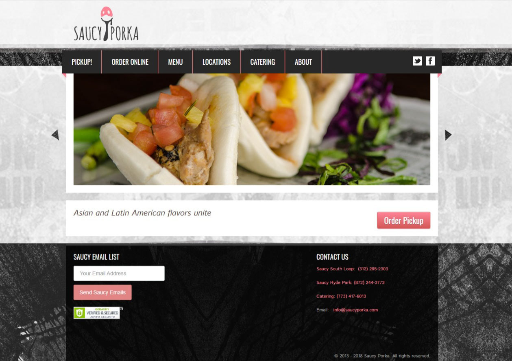
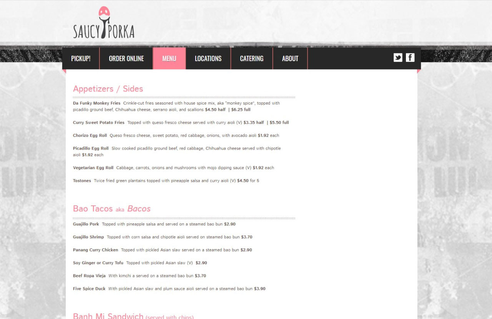
I created a wireframe to experiment with how I wanted my redesigned website to be
laid out:
There were three main issues that I wanted to address in my redesign of Bridgeport
Bakery's site: Finding relevant information was extremely clunky due to their
overloaded site
navigation; major problems with legibility, consistency, and irrelevant content; and
an awkward to navigate, extensive menu.
Artist & Craftsman Supply is a small, employee-owned arts supply store chain. They
have physical locations across the country (and one in Chicago, but sadly, that
location closed in 2020 due to the pandemic). They also have a website where users
can browse products and buy them directly from the site.
The “Shop” menu is needlessly bloated with every option possible at once. Instead,
the menu should progressively display options based on the category in the menu the
user has moused over. (Also, the line spacing within the same product category and
different menu categories is the same height, making spatial grouping of
subcategories confusing)
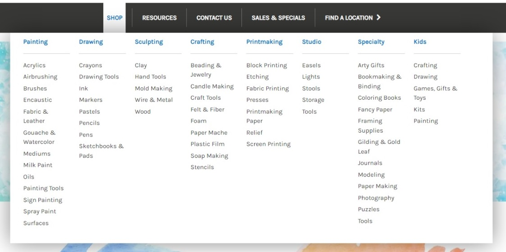
There were inconsistencies in layout and components when the search results page is
compared with the product page. Elements, such as the product cards, that could’ve
been reused to create consistency are displayed differently.
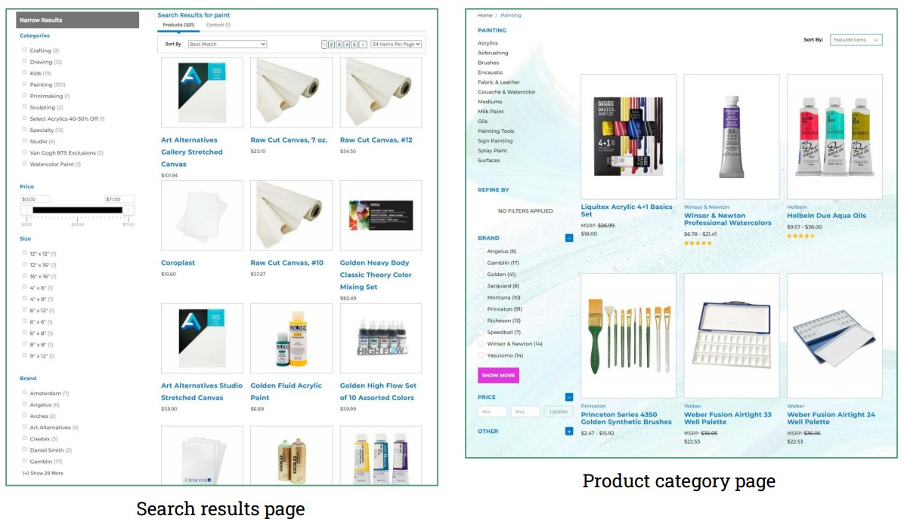
Speaking of components, many buttons were found to be unnecessarily inconsistent
across the site. Here are some examples:
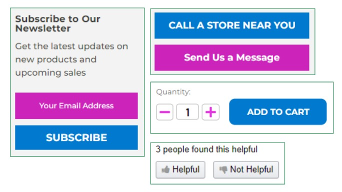
The layout of the product page of certain products were different from the rest. Some
displayed the details and the reviews as a tabbed element, and included an feature
to
search for a nearby physical location (which is unnecessarily implemented as it does
not correspond to whether or not the item is in stock, and there is already a
dedicated page to finding nearby stores).
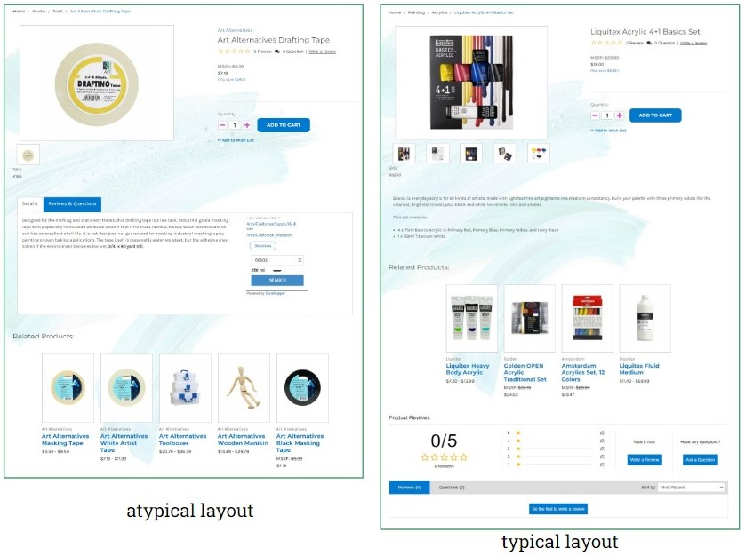
Redesign
Design Objectives/Solutions
Display the menu for the product categories in the header in a less bloated way
by only showing subcategories once the user has moused over a category
Create a consistent aesthetic and layout for the search and product category
pages.
Create a homepage with consistent vertical margins and display content that is
relevant to the user and cohesive with the rest of the content displayed on the
home page.
Create a clean, consistent product page
Through these tasks, the redesign should make the site more clean, consistent,
aesthetic, and overall, more user-friendly
Target Users
The site for Artist & Craftsman Supply is targeted towards users that are mainly
artists and other people looking to buy art supplies.
These users mainly use the site to buy art supplies efficiently, and
less commonly, discover information pertaining to Artist & Craftsman Supply (such as
a physical store’s address and hours, as well as relevant contact information, such
as store, support, and corporate phone numbers).
For the menu, I decided to use progressive disclosure as to only display relevant
subcategories for the user’s selected product category. This cuts down on the amount
of menu items presented to the user at a time, making the menu a lot less bloated.
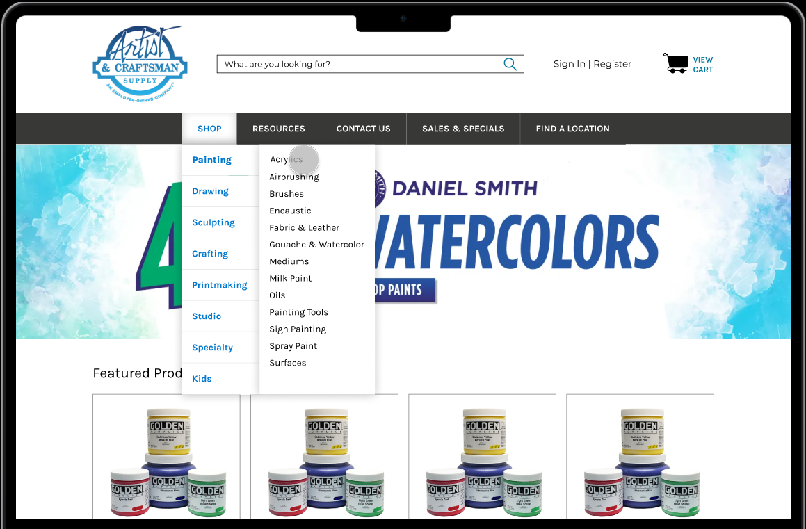
Footer
For the footer, I made sure that the top and bottom margins were consistent. I also
made the input for the input field look like the other input fields on the site,
also for consistency.
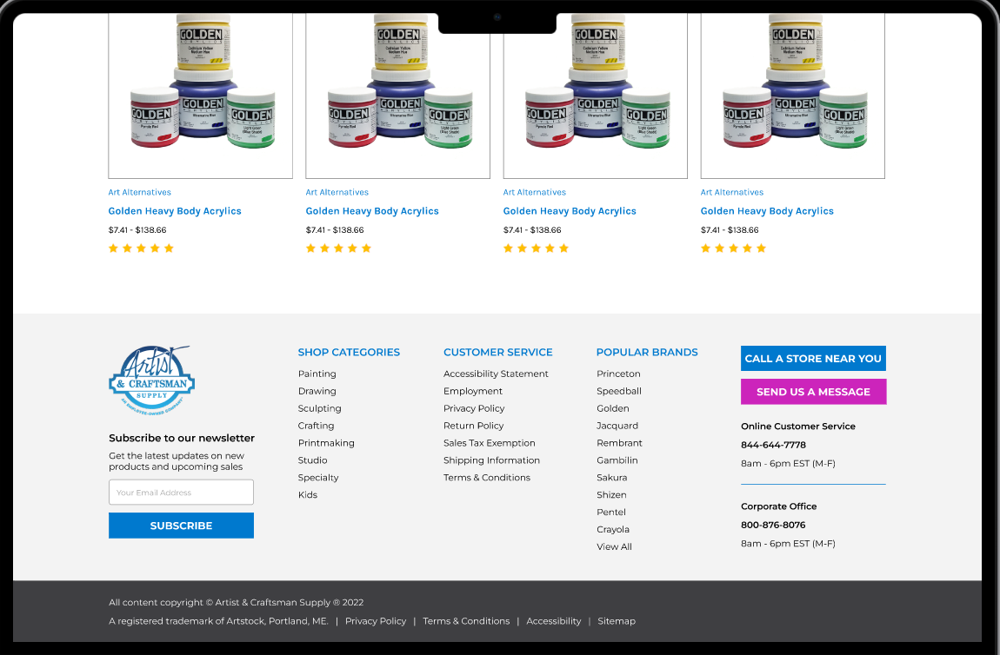
Home Page - Content
As for the content of the home page, I made cards for the products to be displayed in
the “Featured Products” and “Customer Favorites”. These cards are reused across the
site as to keep the layout consistent.
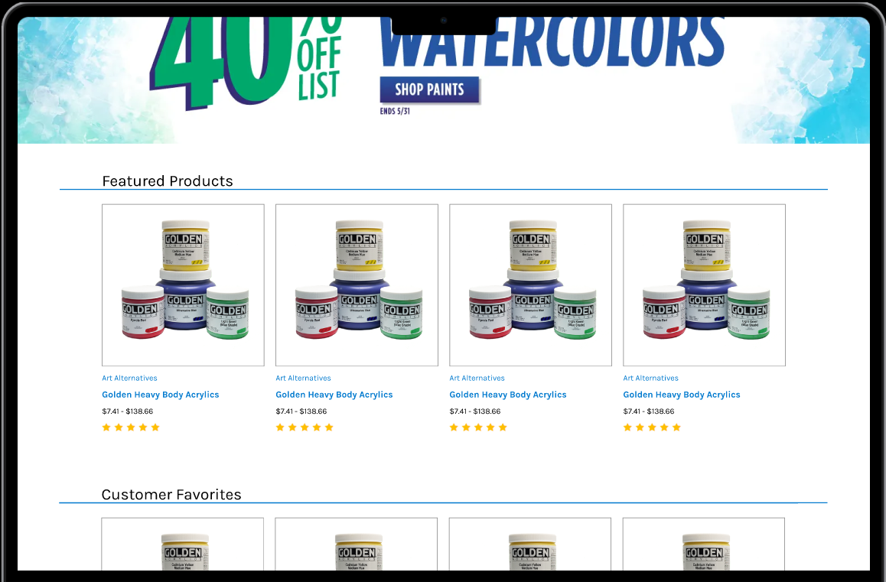
Product Category Page
As for the product category page, made the margins consistent and reused the product
cards shown in the home page content, also to keep things consistent.
Product Page
As for the product page, I decided on the tabbed layout for the product details and
rating, as shown in the atypical layout for the original product page. I decided on
this layout as it would give progressive disclosure for the user’s needs, rather
than showing everything at once. The related products section is also using the same
layout and product cards as seen in the home page.
Reflection
Since the A&C’s original website was already very usable, I did not find it necessary
to propose any major restructuring of the site or any pages. Rather, my redesign
focuses on implementing certain design principles, such as consistency, Hick’s Law,
and progressive disclosure, better than the original site. This is shown in the way
the header menu and product page uses progressive disclosure and how the site
components and margins throughout the site are consistent. My prototype focuses on
the main process of browsing the site for a product, as this process covers the
pages I had the most design issues with.
The West Wing Gallery of Vaporwave
This desktop website was made from scratch as to practice flexbox and absolute
positioning in CSS.
 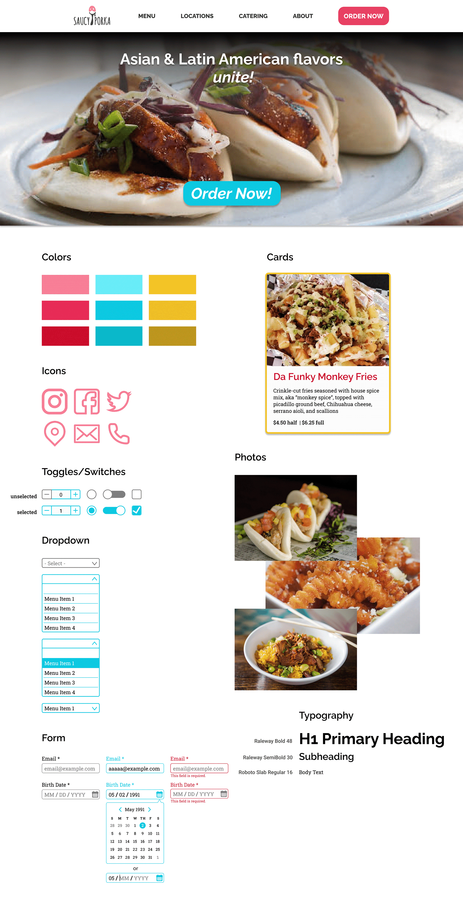
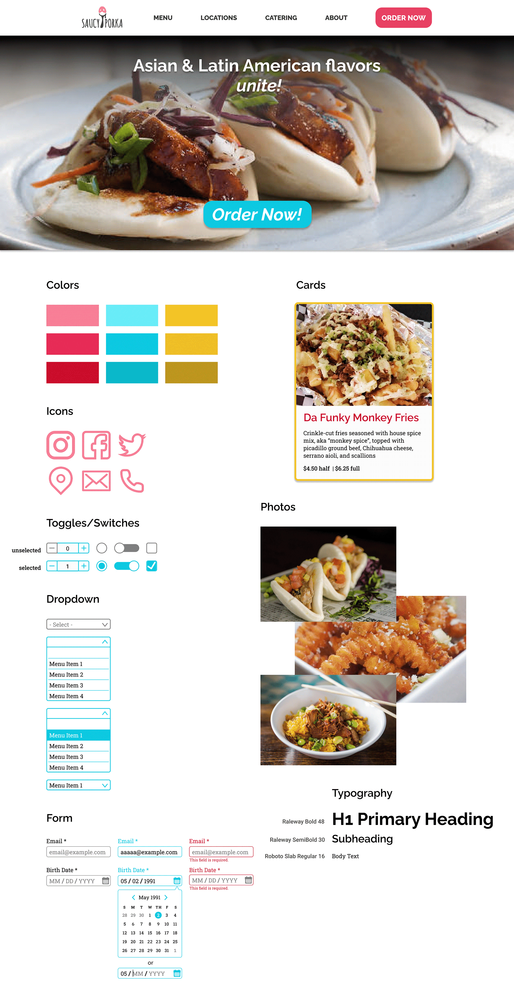